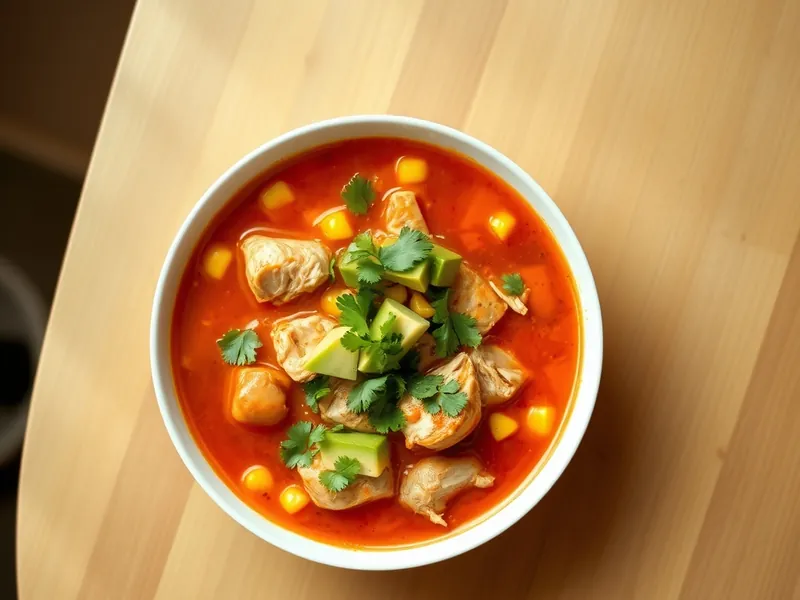

Фото: Иллюстрация ИИ, Cloudflare Workers AI
Мексиканский суп с курицей и кукурузой
Томатный суп с курицей, кукурузой, перцем и зирой, подаётся с авокадо
30 мин4 порц.240 ккал на порциюБ 25 · Ж 7 · У 19Американская кухня
Открыть в приложении: порции, таймеры, список покупок
Продукты на 4 порц.
- Куриное филе350 г
- Кукуруза консервированная1 шт
- Томаты в собственном соку1 шт
- Лук репчатый1 шт
- Перец болгарский1 шт
- Чеснок2 зуб.
- Растительное масло1 ст. л.
- Вода700 мл
- Зира1 ч. л.
- Кинза0,5 пучка
- Авокадо по желанию1 шт
Как готовить
- Нарежьте курицу кубиками 1,5 см, лук и перец мелкими кубиками, чеснок пластинками.
- Обжарьте лук и перец в масле на среднем огне 4 минуты, добавьте чеснок и зиру, жарьте 1 минуту.
- Положите курицу и обжаривайте 3 минуты, пока она не побелеет со всех сторон.
- Добавьте томаты с соком (крупные кусочки разомните ложкой), кукурузу без жидкости и воду. Посолите и варите на слабом огне 12 минут.
- Разлейте суп по тарелкам, положите сверху кубики авокадо и рубленую кинзу.
Совет. Для остроты добавьте половину перца чили вместе с чесноком. В Мексике этот суп подают с кусочками поджаренной тортильи и долькой лайма.